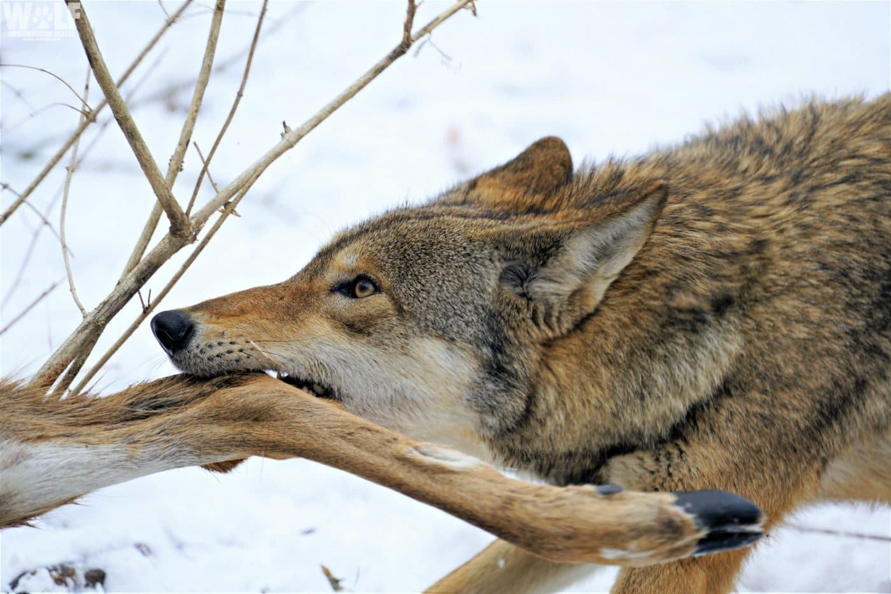
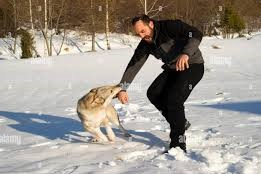

Movements
Wolves are highly social animals that live and travel in groups called packs, which usually consist of 5 to 10 members, although the number can vary. Packs are structured and organized, often comprising a dominant breeding pair (the alpha male and female) and their offspring. Sometimes, unrelated wolves may join the pack.
In the wild, a pack of wolves often travels together for hunting, protecting their territory, and raising their young. The group size can depend on factors such as the availability of prey, habitat conditions, and the time of year. A group of 7 wolves traveling together would likely include the alpha pair, a few subadult wolves (their older offspring), and potentially younger pups. Packs that are this size are considered optimal because they balance efficiency in hunting with the ability to share resources.
Wolves travel and hunt in coordinated ways, using their pack structure to communicate effectively and bring down prey much larger than an individual wolf could manage alone. This cooperative behavior is one of the defining characteristics of wolves and their survival strategy.
Mating
Wolves have a structured mating process that typically occurs during the winter months, usually between January and March. The female enters estrus, a period of fertility lasting about 7 to 10 days, during which she releases pheromones signaling her readiness to mate. Wolves are generally monogamous, with the alpha male and female usually mating for life. Courtship involves behaviors such as following the female and nuzzling, with the female showing signs of receptivity. Mating is brief and occurs several times during the estrus period, culminating in a "tie," where the male and female remain physically connected for up to 30 minutes to ensure the male’s sperm is retained. After successful mating, the female’s pregnancy lasts about 63 days, and she gives birth to a litter of 4 to 7 pups in a den. Both the alpha male and female, along with other pack members, contribute to the care of the pups, ensuring their survival. The entire pack works together to protect and feed the young, and by the time the pups are a few months old, they begin learning to hunt and survive in the wild. The cooperative nature of the pack ensures the pups grow strong and the genetic strength of the pack is maintained.They only mate with their partner only.
Attacking
Wolves are highly strategic and social hunters, relying on teamwork and physical abilities to successfully hunt prey. Their attack begins with stalking and observing potential targets within a herd, often selecting weaker, older, or injured animals. They carefully approach while staying downwind to avoid detection. Once a target is chosen, the wolves initiate a chase, testing the prey’s stamina and attempting to separate it from the herd. Using teamwork, the pack isolates the chosen animal, sometimes splitting up to confuse it or drive it into a trap. Wolves communicate through body language and vocalizations during the hunt, coordinating their movements. Stronger and more experienced members usually lead the attack, biting critical areas like the neck or legs to immobilize the prey. The kill is made by targeting vital spots, often severing the windpipe or inflicting fatal injuries. After the prey is subdued, the pack begins feeding, with the dominant members eating first. Wolves rely on endurance over speed and adapt their strategies based on the prey and terrain, showcasing their intelligence and cohesive pack dynamics.
Behavior with humans
Wolves typically avoid humans, as they are naturally wary and shy creatures. In the wild, they view humans as potential threats and will generally keep their distance. However, if cornered or threatened, they may exhibit defensive aggression, though such encounters are rare. Wild wolves do not hunt humans, and attacks are exceptional, usually occurring under abnormal circumstances like rabies or extreme hunger. On the other hand, wolves raised in captivity or those in rehabilitation programs may display more comfort around humans, though they still retain wild instincts. Wolf-dog hybrids, which are a mix of domestic dogs and wolves, can show a blend of behaviors from both species, with some displaying loyalty similar to dogs, but others may exhibit unpredictable behaviors due to their wild traits. In controlled environments, where wolves are studied or cared for by researchers, they may become more accustomed to human presence, but they maintain their wild instincts and communication styles. Ultimately, while wolves can form bonds with humans under certain conditions, their natural behavior tends to lean towards caution and avoidance in the wild.
Why they are not commonly tamed
Wolves are less commonly tamed than other wild animals due to differences in their social structures, behavior, and evolutionary relationships with humans. Wolves are highly social animals with complex pack dynamics, making them more bonded to their own kind and less likely to fully integrate with humans. Even when raised in captivity, wolves retain strong wild instincts and a natural wariness of humans, which makes them unpredictable and difficult to train. In contrast, lions and tigers, while still dangerous, are more adaptable to captivity. Tigers are solitary, and lions have simpler social structures, allowing them to form bonds with humans when hand-raised. Historically, wolves have been seen as threats to livestock and humans, leading to persecution rather than domestication efforts. Meanwhile, lions and tigers were often kept as symbols of power and status, fostering more efforts to tame and train them for entertainment or display. Additionally, wolves require large territories and specific care, making them harder to manage in captivity. Overall, the combination of behavior, history, and practical challenges explains why wolves are less tamed than other wild animals.